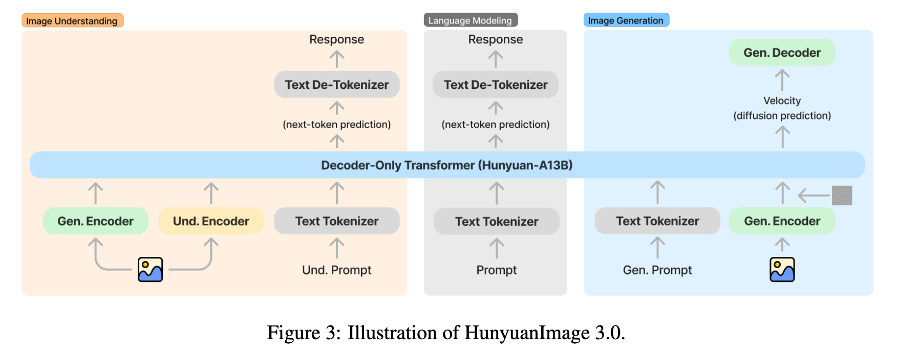

Training scripts for HunyuanImage-3.0
The official release ships inference only. This repo is the training half: LoRA, QLoRA and full fine-tuning for text-to-image generation and text SFT, on Hugging Face Trainer + DeepSpeed + PEFT.
git clone https://github.com/PhotonAISG/hunyuan-image3-finetune.git
Everything needed to train an 80B MoE
Data prep, latent caching, distributed training and quantized single-GPU runs — no glue code required.
Two training modes
Text-only supervised fine-tuning for language modeling, and text-to-image generation trained with flow matching. One flag switches between them.
LoRA, QLoRA & full FT
PEFT LoRA with configurable rank, alpha and dropout. QLoRA loads the base model in 4-bit or 8-bit so one H100 or A100 is enough.
DeepSpeed ZeRO-3
Ready-made ZeRO-3 configs with and without CPU offload, plus sbatch launchers for multi-node Slurm clusters.
VAE latent caching
Pre-encode images once with preprocess_images.py and drop the VAE out of the training loop entirely.
Flow-matching control
Pick the timestep weighting scheme — sigma_sqrt, logit_normal, mode, cosmap — and weight text vs. image loss independently.
Data prep included
Turn Alpaca/ShareGPT text, or an image folder plus a captions CSV, into training JSONL with one command.
Style adapters on Hugging Face
Drop-in LoRA weights produced with the exact scripts in this repository.
Naruto Style Adapter
Shōnen anime look — bold linework, flat cel shading.
Nezha Style Adapter
Chinese animated-feature styling, character design and palette.
Pixel Art Style Adapter
Low-resolution sprite art with a constrained palette.
Trained one worth sharing? Open a PR and we'll list it here.
From images to a trained adapter
Base model weights come from the official repository; everything else is here.
Install
Clone the repo, install dependencies, and download the HunyuanImage-3.0 weights.
Build your dataset
Convert an image directory plus a file_name,text CSV into training JSONL.
Cache latents optional
Pre-encode images to .pt latents; they're picked up automatically at train time.
Train
Set your paths at the top of a launcher script and run it.
# 1 — install
$ git clone https://github.com/PhotonAISG/hunyuan-image3-finetune.git
$ cd hunyuan-image3-finetune
$ pip install -r requirements.txt
# 2 — images + captions.csv -> train.jsonl
$ python prepare_image_gen_data.py \
--image_dir ./my_dataset/images \
--captions_file ./my_dataset/captions.csv \
--output_file train.jsonl \
--style instruct
# 3 — pre-encode VAE latents (optional)
$ python preprocess_images.py \
--model_name_or_path /path/to/HunyuanImage-3 \
--train_data_file train.jsonl \
--output_dir cached_latents \
--image_root_dir ./my_dataset/images \
--image_base_size 1024 \
--image_ratio "1:1"
# 4 — train
$ bash train_image.shPick a script
| Script | What it does | Run with |
|---|---|---|
| train.sh | Text-only supervised fine-tuning (LoRA, multi-GPU DeepSpeed) | bash |
| train_image.sh | Text-to-image generation training | bash |
| train_image_qlora.sh | Single-GPU image training, 4-bit / 8-bit quantized | bash |
| train_slurm.sh | Text-only training on a Slurm cluster | sbatch |
| train_image_slurm.sh | Multi-node image generation training | sbatch |
What you need to run it
Measured at batch size 1 with short prompts (< 50 tokens). Longer prompts or bigger batches need more headroom — turn on moe_drop_tokens if you hit OOM. Full-model training without LoRA needs considerably more than any row below.
| Training mode | Image size | Minimum VRAM |
|---|---|---|
| Text-only | — | ≥ 3 × 80 GB |
| Image generation | 256 × 256 | ≥ 3 × 80 GB |
| Image generation | 512 × 512 | ≥ 4 × 80 GB |
| Image generation | 768 × 768 | ≥ 6 × 80 GB |
| Image generation | 1024 × 1024 | ≥ 8 × 80 GB |
| Image size | GPU | MoE drop tokens |
|---|---|---|
| 256 × 256 | 1 × H100 NVL (94 GB) | Required |
| 256 × 256 | 1 × H200 (141 GB) | Optional |
| 512 × 512 | 1 × H200 (141 GB) | Required |
| 768 × 768 | 1 × H200 (141 GB) | Required |
| 1024 × 1024 | 1 × B200 (180 GB) | Required |
| Image size | GPU | MoE drop tokens |
|---|---|---|
| 256 × 256 | 1 × A100 (80 GB) | Optional |
| 512 × 512 | 1 × A100 (80 GB) | Required |
| 768 × 768 | 1 × H100 NVL (94 GB) | Required |
| 768 × 768 | 1 × H200 (141 GB) | Optional |
| 1024 × 1024 | 1 × H200 (141 GB) | Required |
Knobs you'll actually turn
Straight out of the launcher scripts — edit in place, no config framework.
TRAIN_IMAGE_GENERATION=true
IMAGE_BASE_SIZE=512
IMAGE_RATIO="1:1"
USE_LORA=true
LORA_RANK=64 # more rank, more capacity
LORA_ALPHA=128 # scaling factor
LORA_DROPOUT=0.05
# loss balance + flow-matching weighting
--text_loss_weight 1.0
--image_gen_loss_weight 1.0
--weighting_scheme none
# sigma_sqrt | logit_normal | mode | cosmap | none
--logit_mean 0.0 --logit_std 1.0
--mode_scale 1.29USE_QLORA=true
USE_LORA=true
# pick exactly one quantization width
LOAD_IN_4BIT=true
LOAD_IN_8BIT=false
# extra memory savings at higher resolutions
MOE_DROP_TOKENS=false
IMAGE_BASE_SIZE=256
# memory-efficient optimizer
--optim "paged_adamw_8bit"One JSON object per line
Three record types share the same JSONL file format. In instruct style the image tokens follow the assistant's text; in pretrain style they follow the user prompt directly.
{
"type": "text_only",
"messages": [
{"role": "system", "content": "You are a helpful assistant."},
{"role": "user", "content": "What is AI?"},
{"role": "assistant", "content": "AI stands for Artificial Intelligence..."}
]
}instruct mode computes loss on assistant turns only; pretrain mode trains on every token.
{
"type": "image_generation",
"messages": [
{"role": "system", "content": "You are an image generation assistant."},
{"role": "user", "content": "Generate a photo of a red sports car"},
{"role": "assistant", "content": "Here is the image:"}
],
"target_image": "datasets/images/red_car.jpg"
}The model learns to emit the assistant text first, then the gen_image tokens appended automatically.
{
"type": "image_generation",
"messages": [
{"role": "user", "content": "A photo of a red sports car"}
],
"target_image": "datasets/images/red_car.jpg"
}No system or assistant roles — image tokens follow the prompt directly. Best for large-scale continued pretraining on caption–image pairs.
What's in the box
hunyuan-image3-finetune/
├── train_multimodal.py # trainer (text + image losses)
├── mm_dataset.py # dataset + collator
├── prepare_text_data.py # alpaca/sharegpt -> jsonl
├── prepare_image_gen_data.py # images + csv -> jsonl
├── preprocess_images.py # VAE latent caching
├── train.sh train_image.sh train_image_qlora.sh
├── train_slurm.sh train_image_slurm.sh
├── configs/ # deepspeed zero-3 (± offload)
├── example_data/ # alpaca + t2i samples
└── hunyuan_image_3/ # model code (tokenizer fix applied)Things that save a run
- Start small. Validate the loop on a handful of examples before booking a cluster.
- Cache latents. For any serious image run, pre-encode first.
- Watch memory. Trade batch size against gradient accumulation before renting a bigger GPU.
- Keep bf16 on. It's faster, and it's what the VRAM table assumes.
- Checkpoint often. Set
--save_stepsto something you can afford to lose. - Log it.
--report_to tensorboardor W&B makes loss curves readable.
HunyuanImage-3.0 in one diagram
A unified autoregressive backbone emitting both text and image tokens, with a VAE decoding generated latents back to pixels.

Upstream bug: instruct-style tokenization
In the official repo, hunyuan_image_3/tokenizer_wrapper.py (~line 1216) references
message_list instead of _message_list, skips the
answer_prefix/answer_suffix wrapping on assistant turns, and applies it to
user turns instead — which corrupts instruct-style training sequences.
The copy vendored here already has the fix. Working from the upstream checkout? The full diff is in the README.
Using this in research?
Cite the repository, and the HunyuanImage-3.0 technical report for the model itself.
@misc{hunyuanimage3finetune,
author = {Yang Zhang, Wenzhong Liang, Yanfei Dong},
title = {Finetune HunyuanImage-3.0},
year = {2025},
publisher = {GitHub},
journal = {GitHub repository},
howpublished = {\url{https://github.com/PhotonAISG/hunyuan-image3-finetune}}
}An independent open-source project from Pixo, released under AGPL-3.0 for research and educational use. Not the official HunyuanImage-3.0 training code and not affiliated with Tencent — the official repository (inference code and docs) is Tencent-Hunyuan/HunyuanImage-3.0, under the Tencent Hunyuan Community License Agreement.